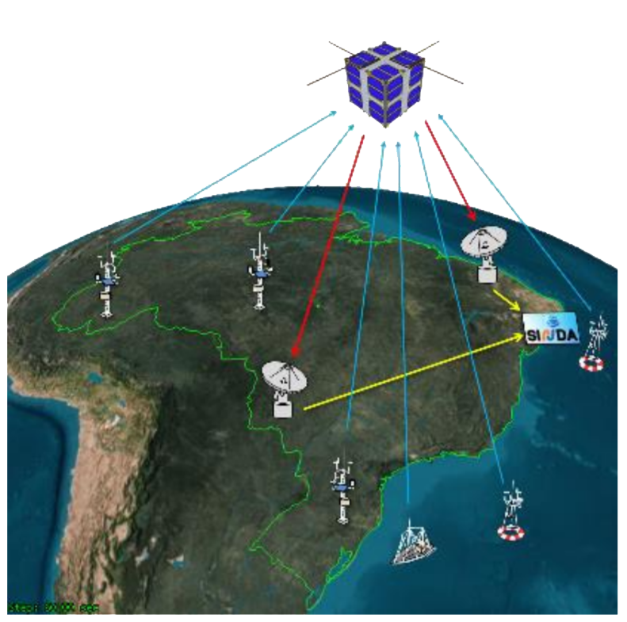
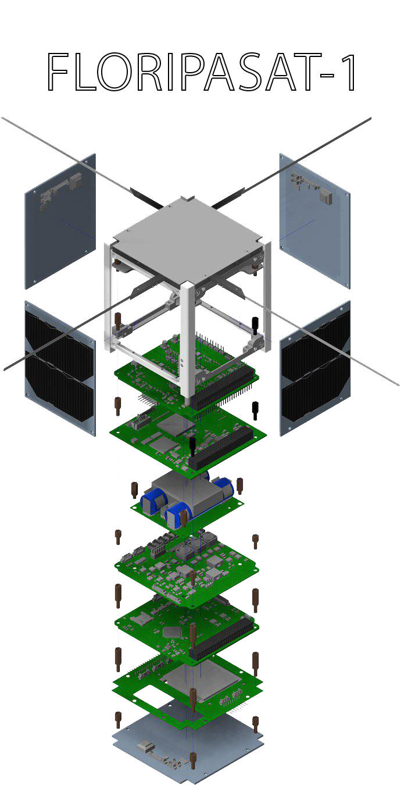
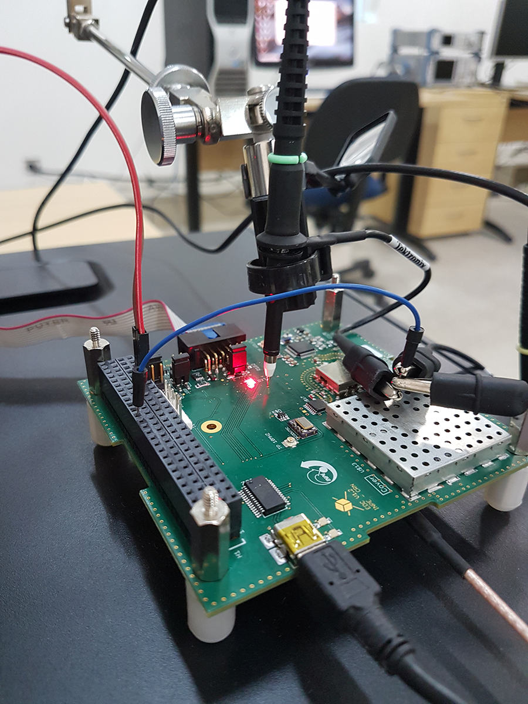
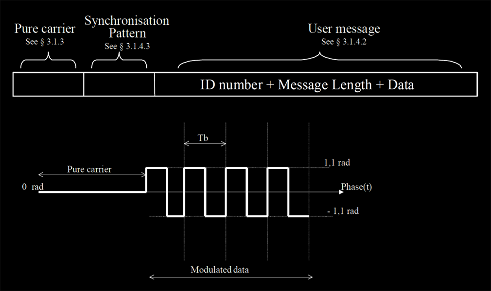
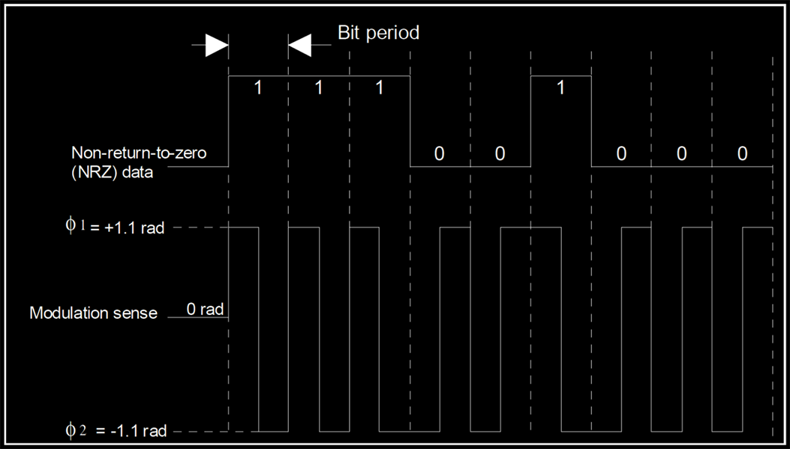
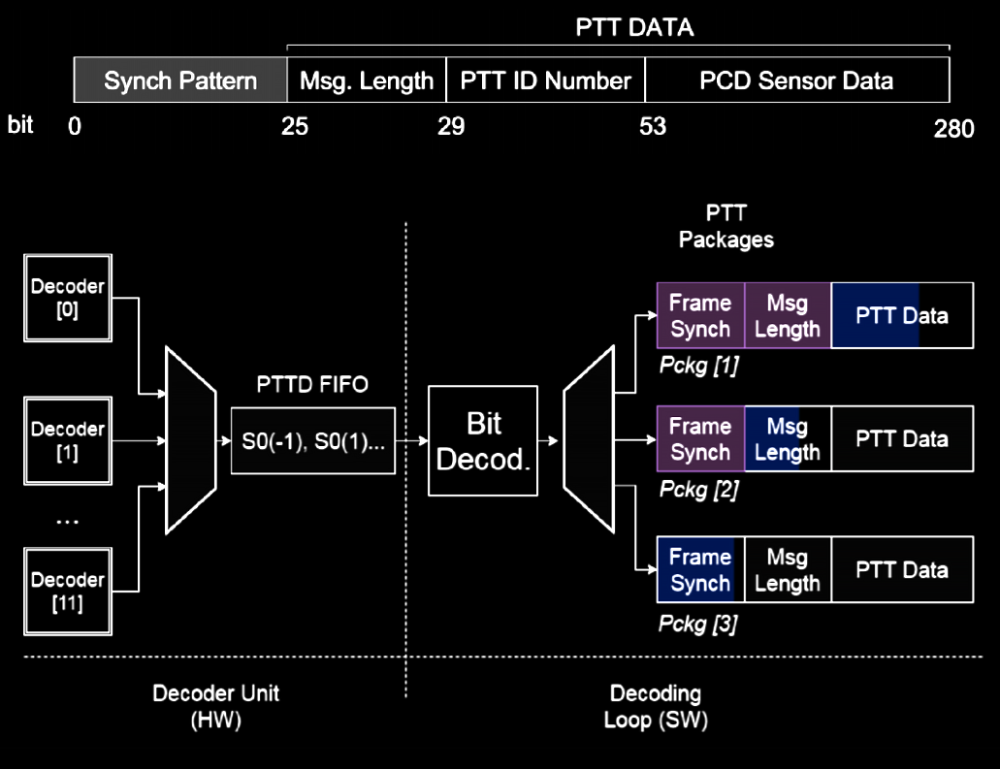
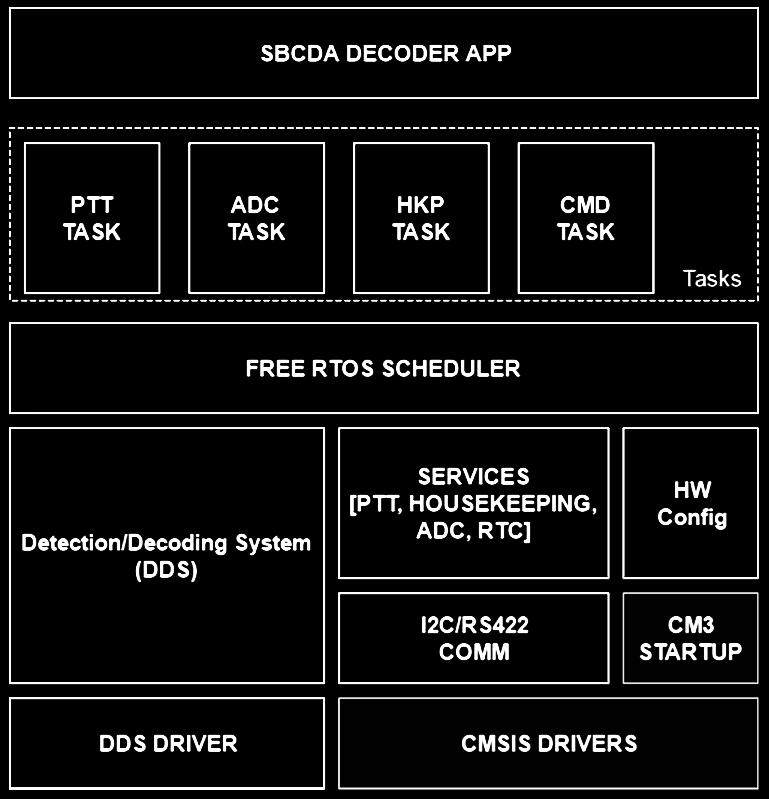
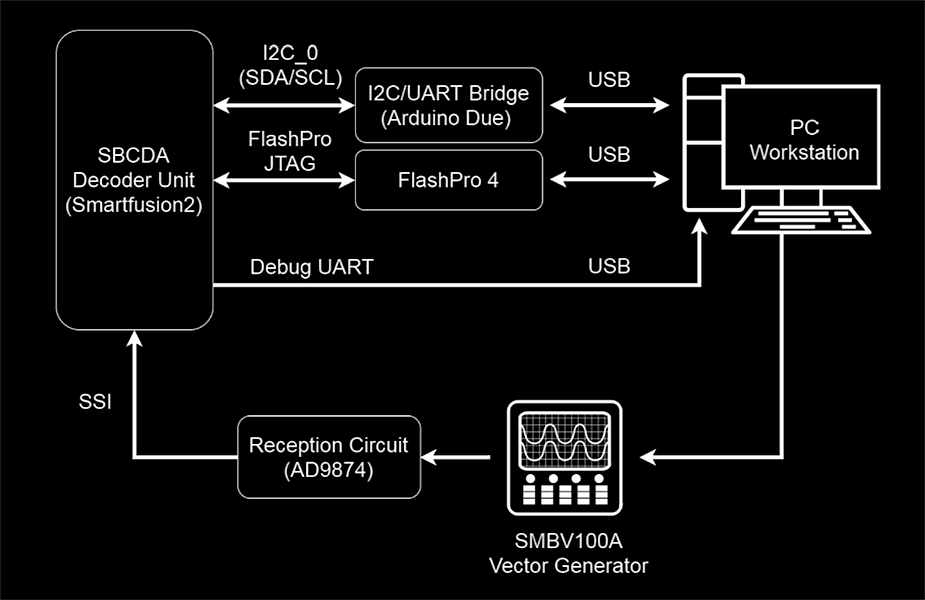
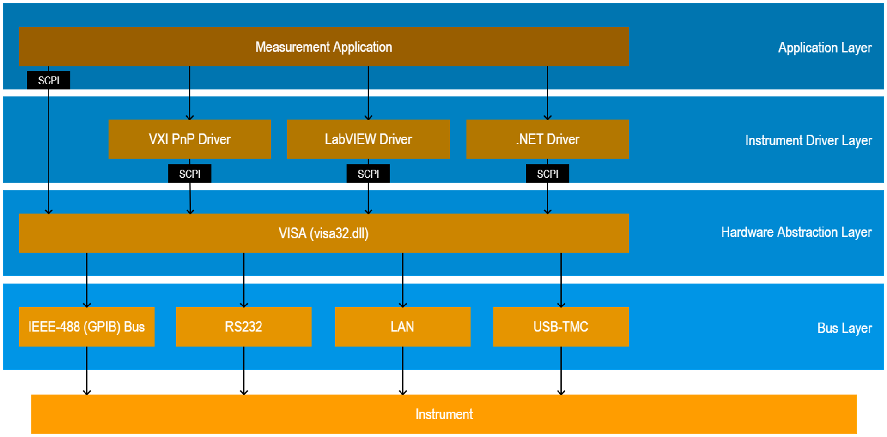
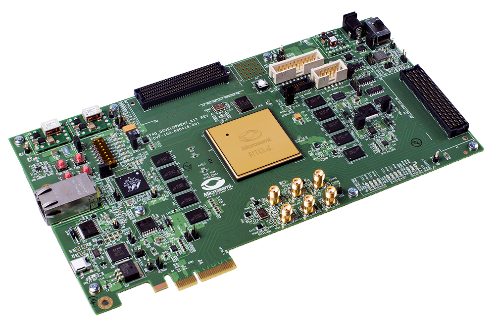

The purpose of this blog post is exposing what is done at space research facilities and how electrical engineers can contribute. Most people think of space research as a field mostly limited to astrophysics and aerospace engineering, but modern satellites and aircrafts in general rely heavily on embedded systems, custom hardware (usually through the usage of radiation-tolerant FPGAs), fault-tolerant architectures and real-time operating systems. On top of that, modern satellites also integrate their power systems, extrmeley complex wireless transmission systems and state of the art solar panels.
As a "hardware guy", the things that usually excite me the most usually fluctuate around being able to work with different computing systems, like coming up with efficient hardware alternatives to tasks usually done through software, exploring different ISAs like RISC-V and SPARC, offloading tasks with specialised instructions, etc.
I was extremely lucky to be able to do an internship in one of the best research intitutes in the entire southern hemisphere, and I'm certain anyone with similar interests would also find it a complete joy. It's not like building the next random IoT thing, the investment to put something in space is huge and it absolutely needs to work brilliantly.
I could write a few paragraphs talking about the institute itself, but I feel like that would be reasonably out of scope and also a waste of time, since INPE itself has a page dedicated to its history.
Most of you, however, probably heard about INPE when the fires in the Amazon happened during 2019. The institute was responsible for monitoring the jungle and reporting deforestation numbers. The Amazon jungle covers a very large piece of land, and at 5.5 million km² it is larger than the entire European Union (4.476 million km²).
The point I'm trying to make is very simple, in order to monitor the Amazon an entire constellation of satellites is needed. And that's what my internship was about.
Old conventional satellites are usually bulky and expensive, and in recent times we've seen most agencies slowly migrate to small nanosatellites, usually CubeSats.
During my internship, we worked on an environmental data collector. To be more precise, we worked on a ARGOS PTT-A2 CubeSat-compatible decoder payload.
Before getting into details, it's important to describe what a CubeSat is.
A CubeSat is defined as compact small satellite composed of 10 cm x 10 cm x 11.35 cm 1.33 kg cubes. Usually speaking, CubeSats also tend to contain off-the-shelf components to decrease costs. Those small satellites can be launched from the International Space Station or from rockets. By early 2019, more than a thousand CubeSats had been launched, and more than 900 of them succeeded.
The initial specifications were published in 1999 by California Polytechnic State University and Stanford University, to promote and expand the knowledge realted to designing and manufacturing cheap low-orbit satellites.
Recently, the Federal University of Santa Catarina launched their first CubeSat, FloripaSat-1, a successful mission of extreme importance to the aerospace field in Brazil. FloripaSat-2, its next iteration, is scheduled to integrate the EDC, which is the project I worked on.

Our payload, named "EDC", is designed to detect and decode signals coming from remote terrestrial platforms. INPE adopted the ARGUS PTT-A2 standard, which was developed by France and the US to monitor wildlife, the environment and marine activity.
The ARGOS system has been used since 1978 in various programmes like "Tropical Ocean-Global Atmosphere program (TOGA)", "Tagging of Pacific Pelagics (TOPP)" and "World Ocean Circulation Experiment (WOCE)" to name a few. Nowadays, more than 100 countries utilise the same system in a way or another. The Centre National D’Etudes Spatiales (CNES) recommends that PTT-A2 signals should be transmitted within the 401.620 MHz to 401.680 MHz band, but excluding the portion dedicated to the ARGUS-1 system, 401.646 MHz to 401.654 MHz.
Our payload, the EDC, has a radiofrequency front-end capable of detecting PTT-A2 signals present in the 401.635 MHz ± 30 kHz band, as long as the receiving power is between -128 dBm and -98 dBm.

PTT-A2 signals are relatively simple, they're initially carrier-only which simplifies detection. Then, data is transmitted through a simple PSK modulation of 2 symbols. A positive symbol transition equals to a logical level 1, and a negative transition is a logical level 0. The message comes in the following order, first a synchronisation word needs to be decoded, then the length of the user message is then presented, followed then by its ID and then by the actual data.


The hardware is capable of decoding up to 12 signals simultaneously, and this is achieved through a hybrid solution of actual parallel hardware in the Microsemi SmartFusion 2 FPGA and RTOS software scheduling.

The EDC was also able to be remotely configured by an on-board computer, sharing an I²C bus with it for data transmission.
To be more detailed, the EDC basically presents itself to the on-board computer as a slave. It has multiple tasks that can be called through the I²C interface, with services responsible for providing the data to be transmitted to the OBC. The decoding algorithm was partially implemented in pure hardware in the integrated FPGA, since parallelism was required. But several software functions run on top of FreeRTOS on a ARM Cortex-M3, which is responsible for scheduling the concurrent tasks.

As an intern, my primary activity was developing a way of testing the prototype. The testbench included an x86 workstation running Matlab, an Arduino Due and a Rohde&Schwarz SMB100A signal vector generator. Matlab was used as a HIL orchestrator, emulating both the on-board computer through the Arduino Due (which was used to make a USB -> I²C bridge) and incoming signals controlling the SMB100A through TCP/IP.

Matlab was chosen due to convenience it brings, since you can easily control all instruments with a single script. It's also important to note that we didn't even need the instrumentation toolbox, baseline Matlab already had access to the Arduino libraries and we could control the Rohde&Schwarz instrument using simple ASCII SCPI commands.

Testing was done through re-creating real-world scenarios and observing how the prototype behaved, which signals it was able to decode properly, which corner case situations revealed bugs in our firmware, how it handled weird OBC behaviours, etc.
Examples that can be easily given include testing for different input power levels, different number of concurret signals (the EDC is supposed to be able to decode up to 12 signals simultaneously), different carrier frequencies, etc.
We had several problems, which includes several things like the OBC simulation (causing the interrupt controller to stop working when interrupted too quickly), or sometimes being able to detect and decode unintended nearby signals even without using a proper antenna (the radiation was enough, since the system is made to work in space several hundred kilometres away from the surface), having insanely weird results due to using PWM voltage converters and even endianness issues when communicating with big-endian devices.
Unknown to us, some I²C implementations also limit the maximum message length. Our prototype had 2 frames that were too big for the Arduino Wire library, the ADC Frame (simply a bunch of samples from the analog front-end) and the PTT Frame (which contained several informations like signal power, frequency, its ID and decoded data).
By default, Wire only allows transactions (I²C reads or writes) of up to 32 Bytes at a time. We assumed that this could be a problem with an arbitrary on-board computer too and decide to implement a workaround, simply breaking packets into smaller ones and introducing an addressable pointer. The result is very simple, large parckets can be retrieved through a series of I²C reads.
I think I can easily conclude that my time spent at INPE/CRN was amazing. I've learnt many things and I could also work with what I've always loved, hardware. The experience exposed me to a different "market", and I found out that space applications require their own domain-specific microcontrollers due to a series of fault tolerance requirements. The LEON SPARC cores are reasonably popular but we've seen a push to bring RISC-V to space, specially by Microsemi and their Mi-V ecosystem.

As someone who advocates in favour of open hardware, the openness of RISC-V makes it incredibly convenient for the space market, since we have a range of successful open-source projects that can be modified for fault tolerance, like Rocket, BOOM and PULP.